Cada residuo cuenta. Descubre el estado de nuestros contenedores inteligentes y cómo contribuyen a un gestion más eficiente.
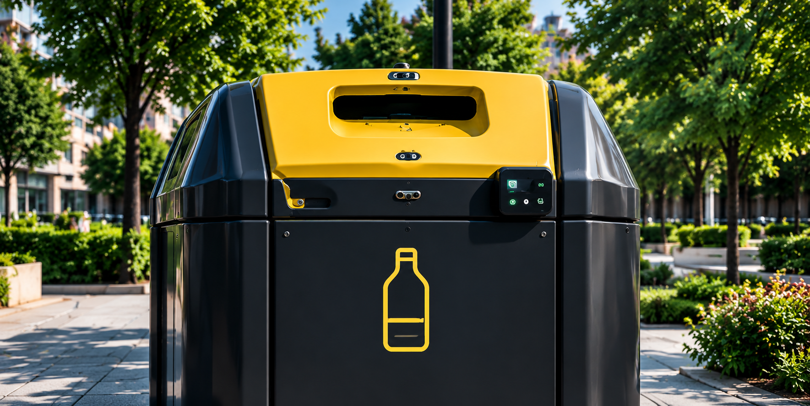
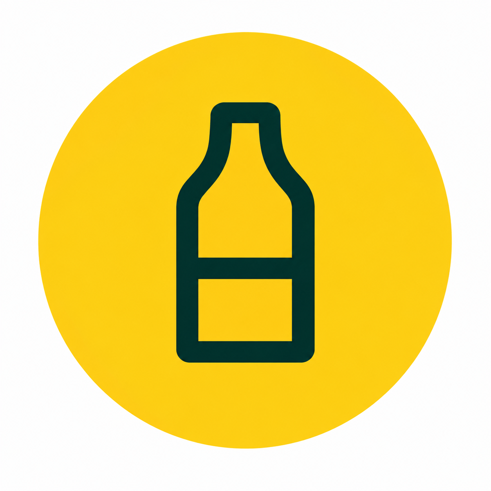
Envases
Sensor conectado
Calle Mayor, 12
Ver detalles
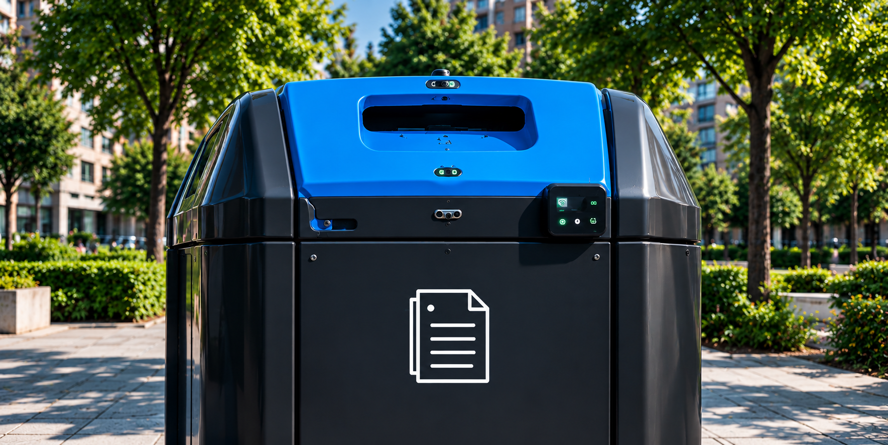
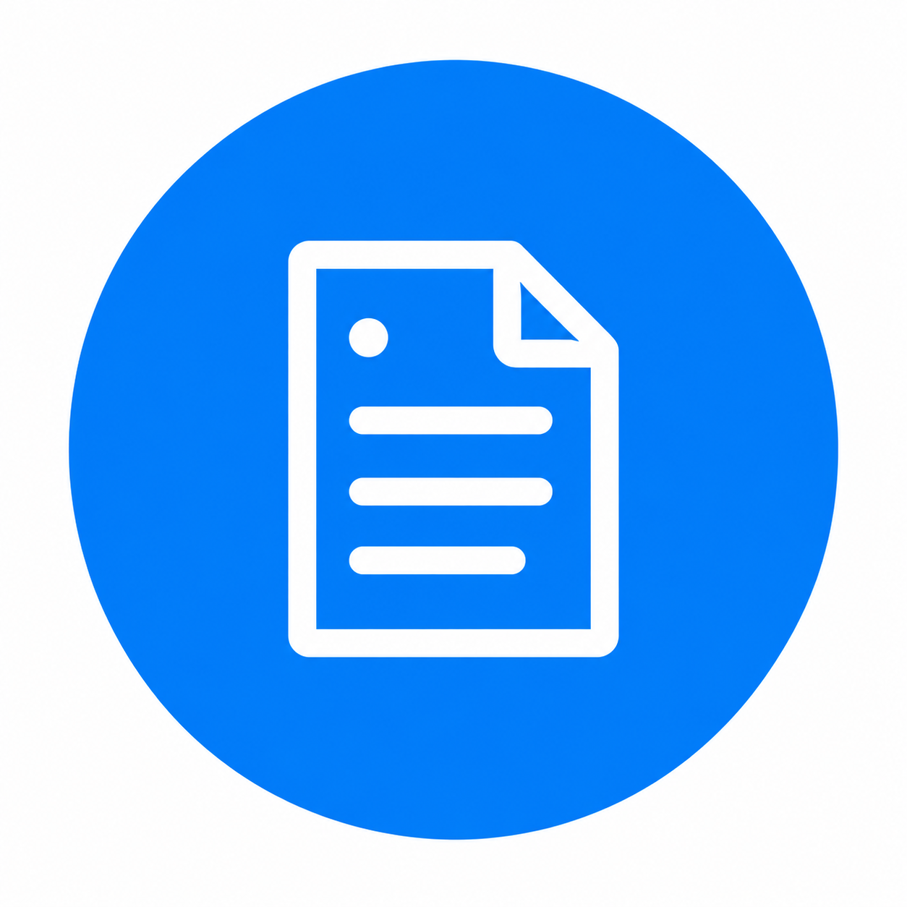
Papel y Cartón
Sensor conectado
Av. de la Constitucion, 8
Ver detalles
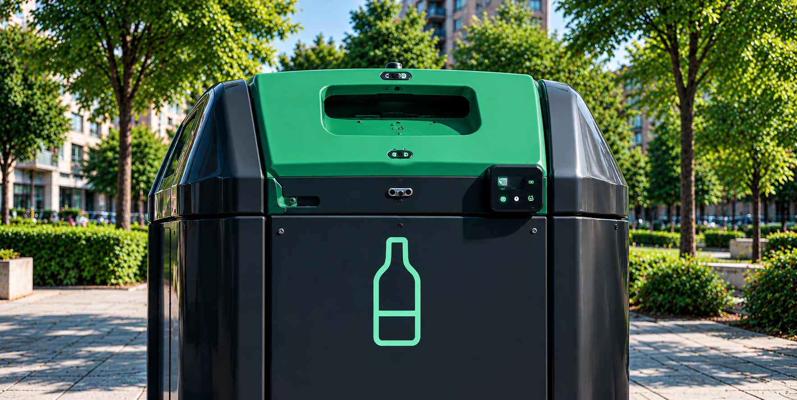
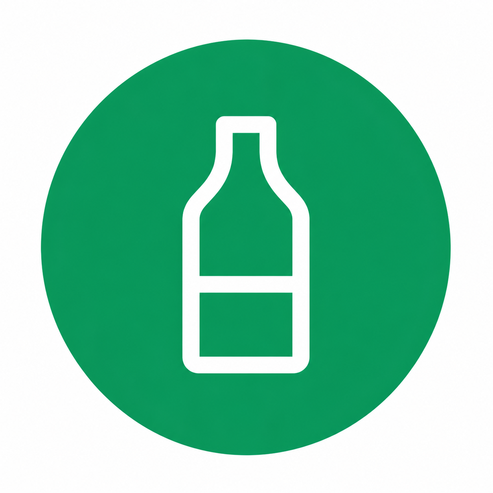
Vidrio
Sensor conectado
Plaza del Sol, 5
Ver detalles
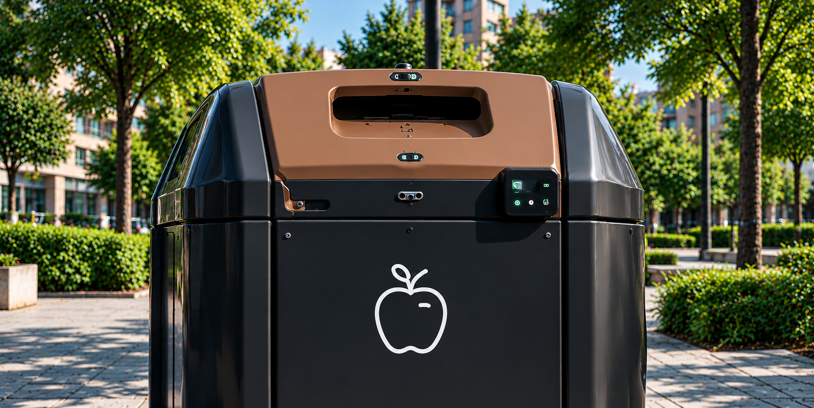
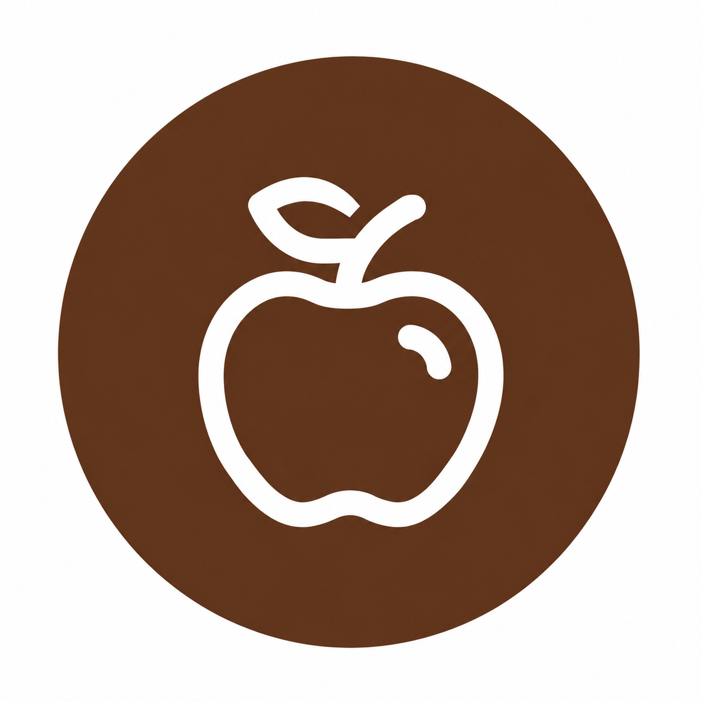
Orgánico
Sensor conectado
Calle los Pinos, 3
Ver detalles
CÓMO FUNCIONA
Nuestros contenedores inteligentes utilizan sensores loT para
monitorizar el nivel de llenado y enviar la información en tiempo real.
Así, optimizamos las rutas de recogida y reducimos el impacto ambiental.
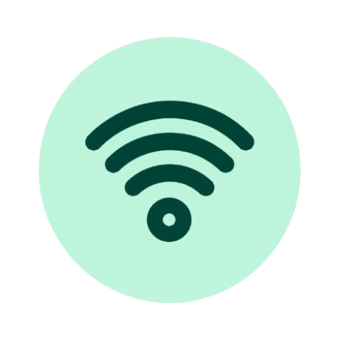
Sensores loTLos sensores miden el nivel de llenado en tiempo real
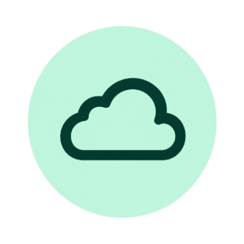
Datos en la nubeLa informacion se procesa y se visualiza en la plataforma
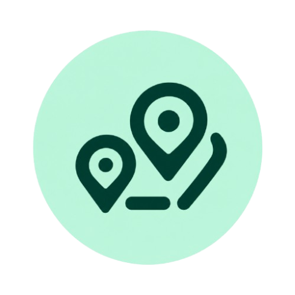
Rutas optimizadasSe reducen los recorridos innecesarios y la huella de carbono
Una ciudad más limpia, eficiente y sostenible es posible. Nuestro sistema no solo facilita la gestión de residuos, también genera un impacto positivo en el medio ambiente y en la calidad de vida de todos.
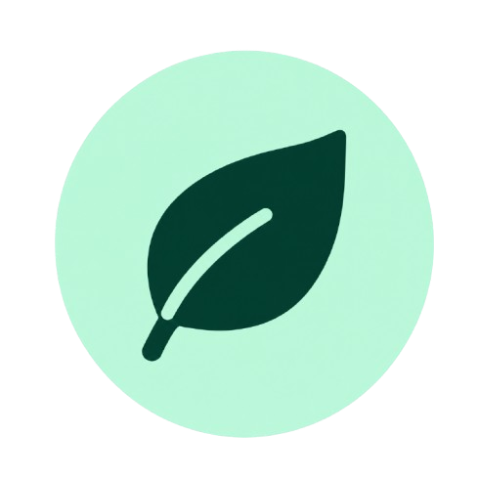
Menos emisionesAl optimizar las rutas de recogida se reducen los desplazamientos de los camiones y las emisiones de CO2.
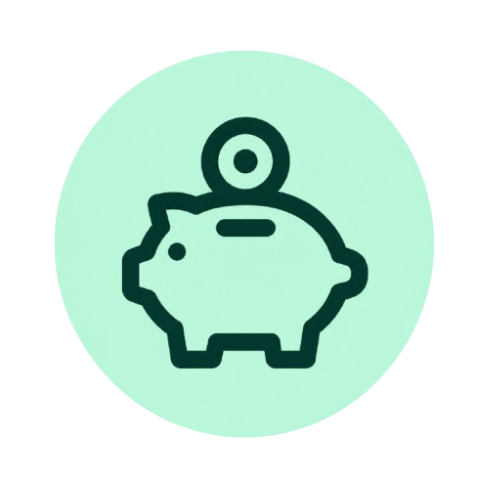
Mayor eficienciaLos recursos se usan mejor, reduciendo costes y mejorando la planificación del servicio.
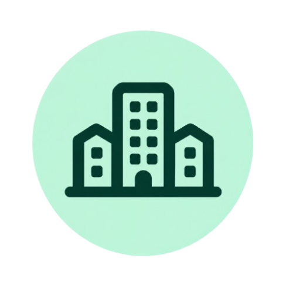
Ciudades más limpiasContenedores siempre controlados, menos desbordamientos y un entomo más saludable para todos.
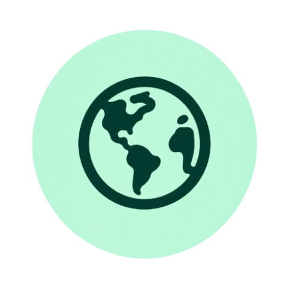
Compromiso con la ODSContribuimos al ODS 11 (ciudades y comunidades sostenibles) y al ODS 12 (producción y consumo responsables).
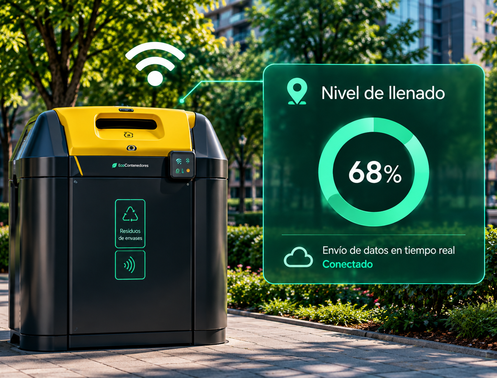